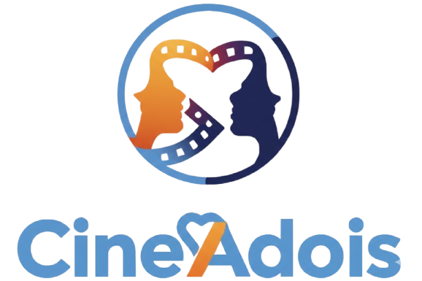

Salvar a festa do cinema.
Sabe aquele momento em que a pizza chega, esfria, e vocês continuam rodando o catálogo do streaming sem conseguir decidir o que assistir? Nós conhecemos bem.
O CineAdois nasceu para resolver o paradoxo da escolha. Acreditamos que o tempo que vocês gastam escolhendo deveria ser gasto assistindo.
A maioria dos aplicativos tenta fazer vocês darem "match" em filmes aleatórios, como se fosse um jogo de sorte. Nós fazemos diferente.
Usamos Inteligência Artificial Generativa para atuar como um mediador.
Em vez de apenas cruzar dados, nossa tecnologia entende o desejo de cada um — "Ele quer ação frenética, ela quer um drama histórico" — e encontra a obra exata que conecta esses dois mundos, explicando o porquê.